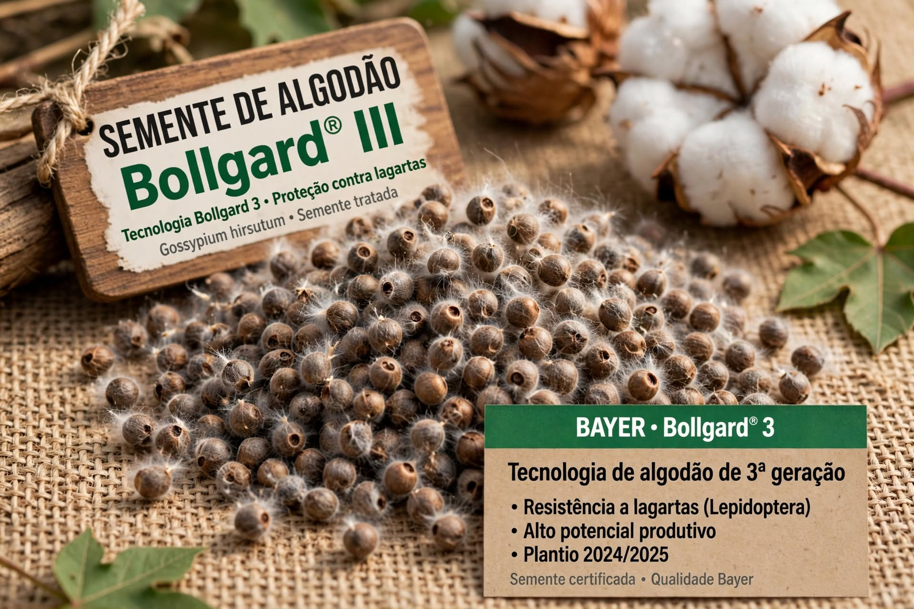
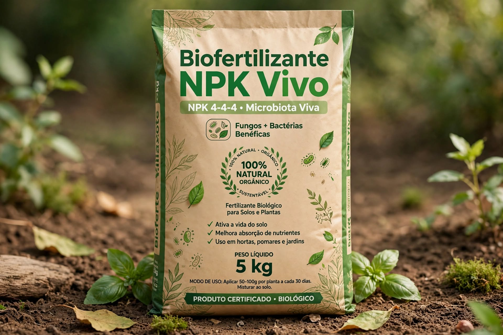
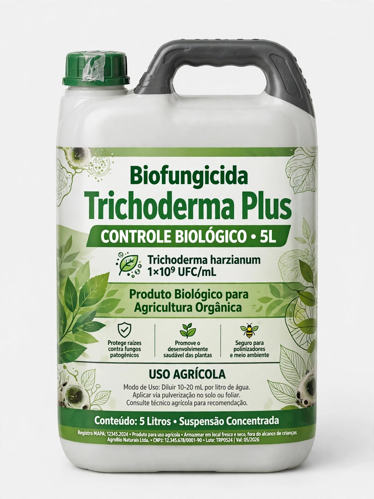
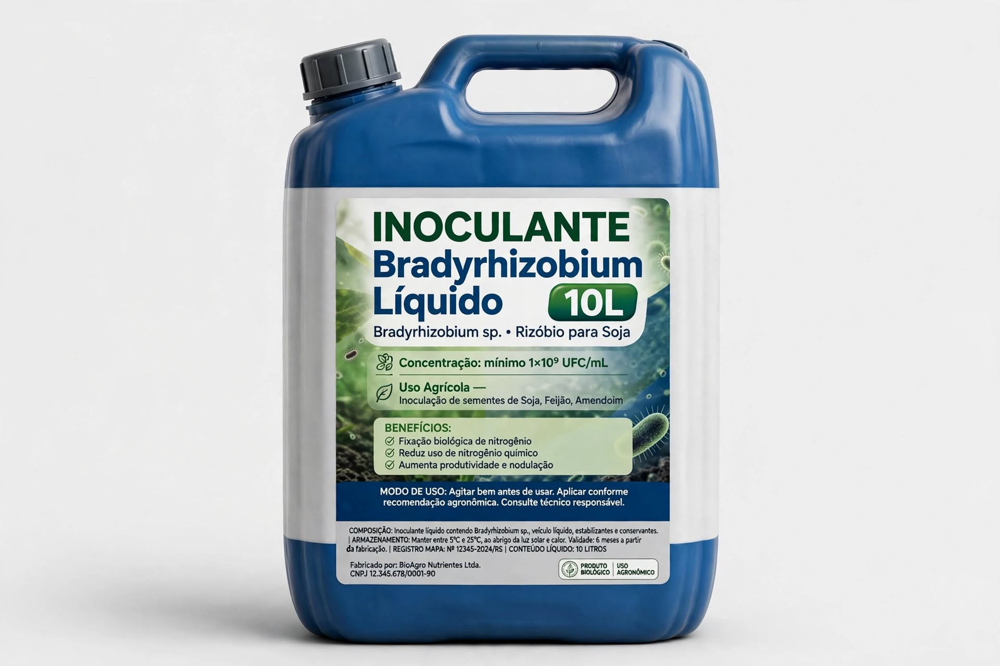

Semente de Milho BT
Resistente a pragas e seca
R$ 450,00
Sementes ModificadasSementes geneticamente otimizadas e insumos biológicos para alta produtividade.
Desenvolvemos cultivares resistentes ao estresse hídrico e bioinsumos que regeneram a microbiota do solo, reduzindo o uso de defensivos químicos na lavoura.
Mais rendimento por hectare com equilíbrio ambiental.
Resistente a pragas e seca
R$ 450,00
Sementes Modificadas
Tolerante a herbicidas
R$ 380,00
Sementes Modificadas
Tripla proteção contra pragas lepidópteras e fibra de alta resistência
R$ 620,00
Sementes Modificadas
Acelerador de absorção de nutrientes
R$ 120,00
Insumos Biologicos
Controle biológico preventivo contra fungos de solo
R$ 245,00
Insumos Biologicos
Fixador biológico de nitrogênio para sementes de soja
R$ 132,00
Insumos Biologicos